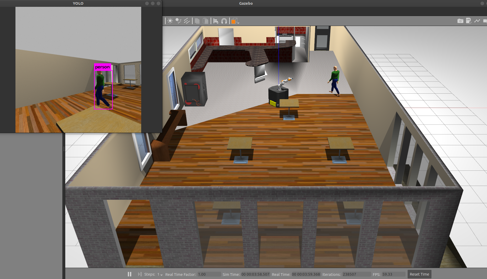

Quick Start
roslaunch cmm_gazebo ridgeback_iiwa_gazebo.launch
roslaunch cmm_viz mobile_manipulation_interactive_demo.launch
roslaunch darknet_ros darknet_ros.launch
Visual Servoing Test in real world

Manipulation Replication Test in real world

Default World
Darknet

Camera Movement in Simulation
LINKS
Visual Servoing:
https://github.com/savnani5/Visual-Servoing/
Object Detection cpp:
https://docs.openvino.ai/latest/omz_demos_object_detection_demo_cpp.html
RGBD Camera:
https://www.stereolabs.com/docs/ros/depth-sensing/
Gazebo person
- walking robot: http://gazebosim.org/tutorials?tut=actor&cat=build_robot
Launch
roslaunch cmm_gazebo ridgeback_iiwa_gazebo.launch
roslaunch cmm_viz mobile_manipulation_interactive_demo.launch
roslaunch darknet_ros darknet_ros.launch
rosrun cmm_darknet bounding_box_subscriber.py
roslaunch realsense2_camera rs_camera.launch